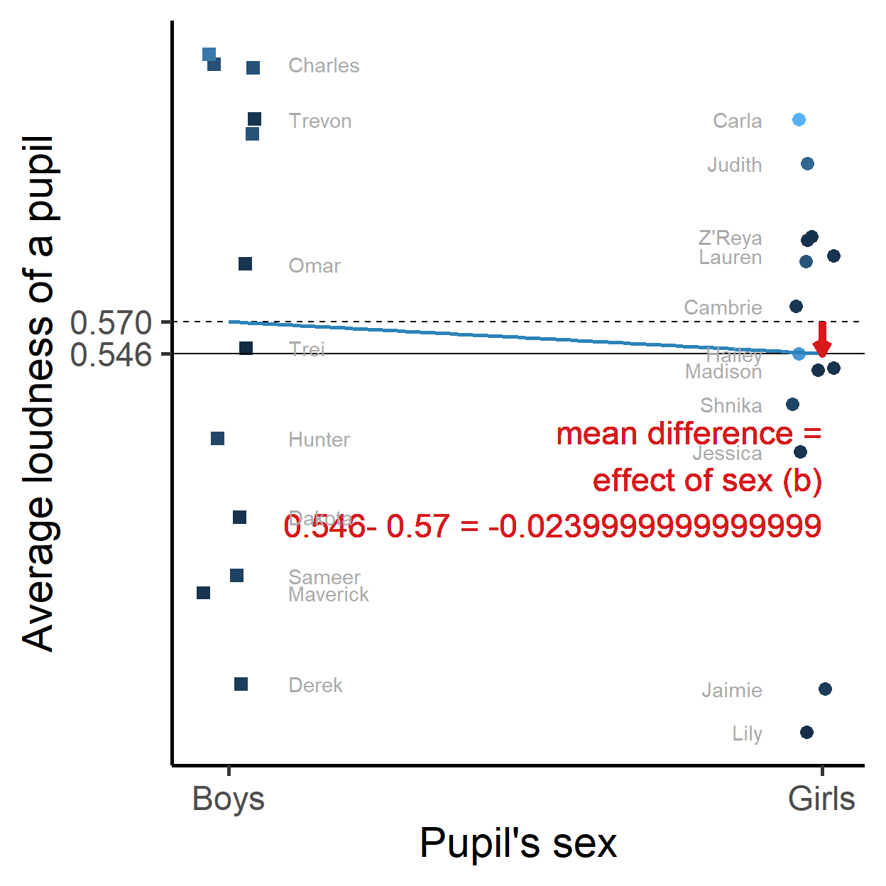
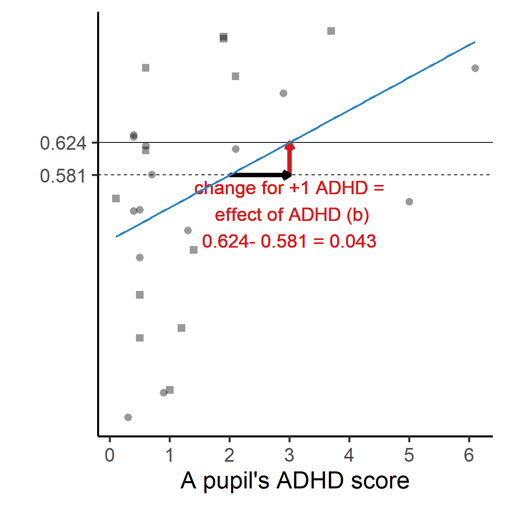
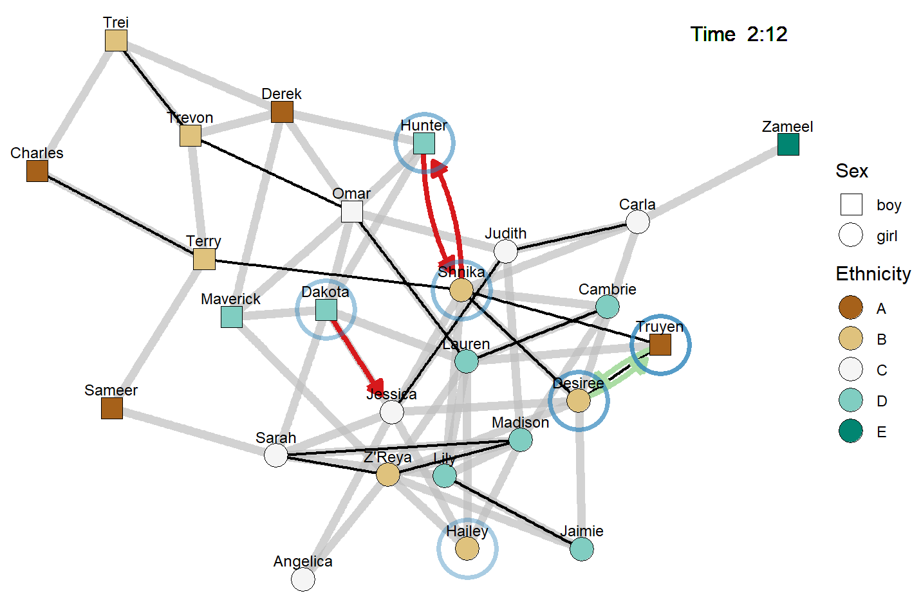

What do pupils do during a break?
We have (fictional) data on what 26 pupils are doing during a 30 minutes break.
The below network picture shows part of this information:
- Pupil’s sex and ethnicity: node shape and color.
- Friendships: fat gray lines.
- Playing together: thin black lines.
- Voice use: the blue circles, the louder, the darker (less transparent).
- Saying something to someone else: green (positive utterance) and red (negative utterance) arrows.
What we want to know:
- How do they act?
- When do they act?
- Towards whom do they act?
Eyeballing the evolving network does not give us easy answers to these questions. There is just too much information. Let us use statistical analysis to answer these questions.
Regression essentials
If we apply statistical analysis, we basically believe:
- that we can measure characteristics (variables) of different objects (cases, units);
- that we can compare these measurements;
- that systematic differences between measurements are meaningful.
For example, we believe that we can measure and compare voice loudness, pupil’s sex, and pupil’s ADHD score.

Each of the above plots compares pupil’s average voice loudness to a background characteristic of the pupil: pupil’s sex (left) and ADHD score (right).
If we want to predict average voice loudness, we call this the dependent or outcome variable. Variables that we use to predict (sex, ADHD score) are called independent or predictor variables.
Sex is measured with two categories:
- boys (coded
0) with average loudness score 0.57 (on a loudness scale from 0 to 1); - girls (coded
1), average loudness score is 0.546.
If we look for systematic differences, we compare the mean (average) scores between boys and girls.
We call the difference between the two means (-0.024) the effect of sex on loudness. Girls are slightly less loud than boys during this break.
ADHD score is measured on a scale from 0 to 7.
For systematic differences in loudness, we look at the consequences of a one unit change in ADHD:
- at ADHD score 2, the predicted voice loudness (blue line) is 0.581;
- at ADHD score 3, the predicted voice loudness (blue line) is 0.624.
A one unit increase in ADHD scores predicts that voice loudness increases by 0.043.
Is this a lot?
- The maximum adhd difference is around 6: if we compare a pupil with ADHD score 6 to another pupil who scores 0;
- maximum difference in predicted voice loudness is around 6 times 0.043 = 0.258;
- this is about one quarter of the loudness scale (from 0 to 1);
- is this a lot?
The straight blue lines in the plots are called regression lines.
How do we get a regression line?
Ordinary regression in R
If the variable that we want to predict is numerical (real numbers, not a set of category codes), we can use the lm() function to estimate a regression line (regression model).
If you are new to R, take a moment to read the code below. In green, you see comments, which are not executed. Use # to create a comment.
The two black lines do the real work. The first black line executes a regression analysis (using lm() with avg_loudness as outcome left of ~ and adhd as predictor right of ~) and stores (<-) the results in a data object called my_first_model. The second black line shows a summary of the results.
Now run the code and inspect the results.
# Estimate a regression model with lm() and save the results in my_first_model.
# Use the data set loudness_average, which contains variables:
# - ID: pupil's ID (sequential) number,
# - label: pupil's name,
# - avg_loudness: pupil's average voice loudness during the break,
# - sex: pupil's sex
# - ethnicity: : pupil's ethnicity,
# - adhd: pupil's ADHD score.
# R is case-sensitive!
# Estimate the regression model and store it as my_first_model.
my_first_model <- lm(avg_loudness ~ adhd, data = loudness_average)
# Show the stored results with the summary() function.
summary(my_first_model)If you run this code, you get a lot of numbers.
- Look at the table of coefficients,
- spot the row with
adhd, - look at the number under
Estimatein this row (the unstandardized regression coefficient, b); - this is the effect of ADHD on voice loudness.
- Didn’t we see this number before?
- What was the meaning of this number?
Excercises
- Change the code to estimate the effect of sex on voice loudness. Interpret the coefficient of sex.
- Change the code to estimate the effect of both sex and ADHD score on voice loudness. Tip: Literally add a second predictor using the
+sign.
Statistical significance
##
## Call:
## lm(formula = avg_loudness ~ sex + adhd, data = loudness_average)
##
## Residuals:
## Min 1Q Median 3Q Max
## -0.25997 -0.10727 0.03839 0.10279 0.18302
##
## Coefficients:
## Estimate Std. Error t value Pr(>|t|)
## (Intercept) 0.51288 0.04784 10.720 2.03e-10 ***
## sex -0.03668 0.05616 -0.653 0.5202
## adhd 0.04421 0.01907 2.318 0.0297 *
## ---
## Signif. codes: 0 '***' 0.001 '**' 0.01 '*' 0.05 '.' 0.1 ' ' 1
##
## Residual standard error: 0.1421 on 23 degrees of freedom
## Multiple R-squared: 0.1946, Adjusted R-squared: 0.1246
## F-statistic: 2.779 on 2 and 23 DF, p-value: 0.08297In the summary of a regression model, you encounter the column Pr(>|t|):
- which gives the so-called p value of a statistical test on the estimated effect;
- if this value is below .05, the test is statistically significant,
- as indicated by the stars.
Statistical significance is the most popular and probably worst understood concept in statistics.
- A significant effect does NOT mean that there is a substantive or substantially interesting effect.
- An insignificant effect does NOT mean that there is no effect.
So what does it mean?
Confidence intervals
For understanding the significance test, we can look at the confidence interval of an effect.
# Again, estimate a regression model with lm() and save the results in my_second_model.
my_second_model <- lm(avg_loudness ~ sex + adhd, data = loudness_average)
# Use function confint() to get the confidence intervals of the effects.
confint(my_second_model, level = 0.95)- We usually look at the 95% confidence interval;
confint()gives us the lower limit (column2.5 %) and upper limit (column97.5 %) of the interval- that contains ‘plausible values’ for the effect
- in the population
- from which our data were randomly sampled.
The plausible values for the effect of sex on voice loudness:
- range from -0.15 to 0.08;
- so the effect can be negative and positive;
- girls can score on average lower (negative effect) or higher (positive effect) than boys;
- this effect was not statistically significant.
The plausible values for the effect of ADHD score on voice loudness:
- range from 0.005 to 0.084;
- so we are confident that the effect is positive;
- higher ADHD score predicts louder voices, not voices that are less loud;
- this effect was statistically significant.
So, the meaning of statistical significance:
- if an effect is statistically significant, we are confident that we know the direction (sign) of the effect: Predicted (outcome) values either increase or decrease for higher predictor levels;
- if an effect is NOT statistically significant, we are NOT confident that we know the direction (sign) of the effect.
Exposure to loud peers
A pupil can be loud at some moments and not so loud on other moments during a break. So let us not analyze average loudness of a pupil over the entire break. Instead, let us analyze all events in which pupils raise their voices.
Analysis goal: If a pupil raises their voice at a particular moment (the event), we want to predict voice loudness (the dependent/outcome variable).
Let us have a look at the network at time 2:12 during the break. Truyen is clearly louder than, for example, Dakota or Hailey (remember: the darker/more opaque a blue circle, the louder). Why would that be? Can we predict (or explain) this?

Truyen is playing with Shrika and Desiree (black lines), both of whom are also talking. Truyen is talking with Desiree in a friendly tone (mutual green arrows), whereas Shrika seems to be having an argument with Hunter (mutual red arrows).
Here, voice loudness seems to depend:
- not just on stable characteristics of the speaker (node attributes): sex, ethnicity, ADHD score,
- also on loudness of other pupils,
- and the (current) relations with other pupils: playing together, being addressed (positively or negatively), and perhaps friendship, or merely being together.
The combination of points 2 and 3 is generally called network exposure:
- due to your current relation with a peer (e.g., playmate, being together on the playground)
- who has a particular characteristic (e.g., speaks at a particular volume),
- you are aware of that characteristic
- and (more) likely to respond to it (e.g., adjust your own volume).
Measuring exposure
Constructing predictor variables like exposure is a challenge in the analysis of events within social networks. How should we measure exposure?
For each time a pupil uses their voice, we need one and only one score that reflects the exposure to other peers’ voices at or before that moment.
We must choose:
- a time window: How far back do we include preceding events in the network, e.g., utterances by other pupils?
- an aggregation function: Several peers may have produced events (spoke) and each peer may have produced more than one event, how do we combine these in one exposure score? And do we take into account non-events, e.g., peers who did not use their voice?
- a subdivision by type of relation: How do we take into account the current relation(s) between pupil and peers?
If we want to predict the loudness of Truyen’s utterance at time 2:12 (red in the below figure), we have to look at the utterances occurring beforehand. The figure shows the utterances (blue bars), Truyen’s playmate ties (grey rectangles), and addressees of utterances (arrows, green indicates positive utterances) over time.

Ad 1, time window: Three possible time windows are indicated by dashed boxes. The longer the time window, the more utterances (by more pupils) are included in the calculation of exposure.
Ad 2, aggregation function: We can use (among others) the mean, last, maximum, or minimum loudness of all utterances within the selected time window. In addition, we can calculate a weighted mean, weighing recent utterances more strongly than distant utterances.
Ad 3, a subdivision by type of relation: If we want to know whether loudness of playmates or conversation partners is more important to a speaker’s loudness, we must create separate exposure variables for loudness of conversation partners, playmates, and peers who are neither of the two.
Example: Truyen’s exposure as the average value of the loudness of each pupil’s last utterance in the preceding minute subdivided by loudness of conversation partners, playmates, and other pupils.
Exposure variables and Truyen’s score on these:
- Exposure to loudness of conversation partners = Desiree’s loudness in her last utterance before 2:12. Desiree is the only pupil who said something to Truyen in the preceding minute, so her last utterance counts.
- Exposure to loudness of playmates = the average loudness of Desiree and Shnika’s last utterances.
- Exposure to loudness of other pupils = the average loudness of the last utterances by Hunter, Hailey, Dakota, and Maverick.
Estimating exposure effects
The data set loudness_events contains several exposure variables:
Window: only current voices.
- expo_last_max: The loudest voice at the moment a pupil starts an utterance.
- expo_last_mean: The average sound level at the moment a pupil starts an utterance.
- expo_last_min: The softest voice at the moment a pupil starts an utterance.
Window: all voices in the last minute.
- expo_minute_max_playmate: The loudest voice of playmates’ last utterances in the preceding minute.
- expo_minute_max_conversation: The loudest voice of conversation partners’ last utterances in the preceding minute.
- expo_minute_max_other: The loudest voice of all other pupils’ last utterances in the preceding minute.
Note: If a pupil does not have a playmate or conversation partner, playmate or conversation partner exposure is set to the average of the variable during the break.
Exercises
- Use the data set loudness_events to estimate a regression model predicting pupils’ loudness (variable
loudness) from the loudest voice at the moment a pupil starts an utterance (variableexpo_last_max), pupil’s sex (variablesex) and adhd score (variableadhd). Interpret the confidence interval of the exposure effect.
# Estimate the model: Enter the variables and data set!
exposure_model1 <- lm( ~ , data = )
# Show confidence intervals of the effects.
confint(exposure_model1)- Replace the exposure variable
expo_last_maxbyexpo_last_mean(the average sound level at the moment a pupil starts an utterance). How does the exposure effect change? Which exposure variable has a more convincing effect?
# Copy & paste previous code and change what is necessary?- Estimate a regression model predicting pupils’ loudness (variable
loudness) from the exposure to voices in the preceding minute separated by type of relation: voices of current playmates (variable:expo_minute_max_playmate), current conversation partners (variable:expo_minute_max_conversation), and other pupils (variable:expo_minute_max_other). Also include pupil’s sex and adhd score. Interpret the confidence intervals of the three exposure effects. Which effect is most convincing?
# Copy & paste previous code and change what is necessary.Conclusion
We have:
- Reviewed the basics of regression analysis;
- Learned how to do regression analysis in R;
- Thought about how to measure peer exposure and exposure effects;
- Most importantly, we started thinking about events in networks.
These are big steps that we have taken!
Further Reading
- Miles, J., & Shevlin, M. (2001). Applying regression & correlation: A guide for students and researchers. SAGE. My favorite introduction to regression analysis, especially Part I: I Need To Do Regression Analysis Tomorrow.
Appendix: Data preparation
As said before, calculating the exposure variables is complicated. In this section, you can see how that can be done.
This is an advanced topic that you should probably only study if you start working with your own data.
This tutorial uses the tidyverse approach to data wrangling (preparation). Study the book R for Data Science if you are not familiar with this type of R code.
Basic data
With events within networks, we usually have four data sets:
A data set with characteristics of the network nodes (here: pupils) that do not change, such as sex and ADHD level. In our case, this data set is called
pupils_const. It contains one row for each pupil.A data set with characteristics of the network nodes (here: pupils) that may change, such as voice loudness. In our case, this data set is called
pupils_dyn. It contains one row for each time that an event happens for a pupil, for example, one row for each time pupils raise their voices. It also contains the timing of the event: onset (start) and end (terminus).A data set with characteristics of the network links (here: links between pairs of pupils) that do not change, such as friendship ties. In our case, this data set is called
pairs_const. It contains one row for each pair of pupils, with the sender of the tie (from) and the receiver (to). In our data, friendship is a symmetrical relation, so if A is friend with B, there is both a row with A as sender and B as receiver and a row with B as sender and A receiver.A data set with characteristics of the network links (here: links between pairs of pupils) that may change, such as playmate ties. In our case, this data set is called
pairs_dyn. Just likepairs_const, it contains one row for each pair of pupils, with the sender of the tie (from) and the receiver (to).
Exercises
- Inspect the variables and cases of the data set
pupils_const. Do they fit the above description?
# Check out the variables in a data set with the str() function (str = structure).
str(pupils_const)tibble [26 x 8] (S3: tbl_df/tbl/data.frame)
$ ID : int [1:26] 1 2 3 4 5 6 7 8 9 10 ...
$ label : chr [1:26] "Hunter" "Charles" "Jessica" "Judith" ...
$ present : logi [1:26] TRUE TRUE TRUE TRUE TRUE TRUE ...
$ onset : num [1:26] 0 0 0 0 0 0 0 0 0 0 ...
$ terminus : num [1:26] 780 780 780 780 780 780 780 780 780 780 ...
$ sex : num [1:26] 0 0 1 1 0 1 1 0 0 0 ...
$ ethnicity: chr [1:26] "D" "A" "C" "C" ...
$ adhd : num [1:26] 1.4 1.9 0.5 2.9 0.6 0.4 0.7 1 3.7 0.5 ...# View the first few lines of data with print() or head().
head(pupils_const)# If you want to see a description of the data, use the help function.
?pupils_const- Change the above code to inspect the other three data sets.
Calculating exposure variables
Every row in the pupils_dyn data set (with a value for loudness) represents a pupil using their voice. We want to predict the loudness of the voice, which is our dependent/outcome variable.
We want to predict it from the loudness of preceding voices, so we must select the preceding voice events (within the chose time window) and calculate exposure scores.
The code below does the trick. As you can see, it is not simple.
# data preparation for analyzing loudness at the event level with several
# exposure variables.
# first create a helper data frame only containing utterances in Break 1
utterances <- pupils_dyn %>%
#select utterances in Break 1
filter(
breakID == 1 & #only events in Break 1
!is.na(loudness)
) %>%
#drop the superfluous variables
select(-onset.censored, -terminus.censored, -gameapp, -breakID)
# next, create a helper data frame containing playmates and utterance addressees in Break 1
playmates_help <- pairs_dyn %>%
#keep relations in Break 1 and only playmates
filter(breakID == 1 & dyntie == "Playmate") %>%
#remove superfluous variables
select(-breakID, -onset.censored, -terminus.censored, -negative)
addressing_help <- pairs_dyn %>%
#keep relations in Break 1 and utterances
filter(breakID == 1 & dyntie == "Utterance") %>%
#remove superfluous variables
select(-breakID, -onset.censored, -terminus.censored, -dyntie)
# then, create a helper data frame with all last utterances of peers for all
# utterances to be predicted
cases_help <- utterances %>%
#link every utterance to all utterances
#BEWARE: can create a very large intermediary data frame
full_join(utterances, by = character()) %>%
#select only joined (second) utterances that happened in the minute
# preceding the utterance to be predicted (first utterance)
# because our longest window is 1 minute
filter(
onset.y < onset.x & #the second utterance must have started before the first..
onset.y >= onset.x - 1 & #..but not longer ago than 1 minute (onset is measured in minutes)
ID.x != ID.y #don't use utterances by the pupil of the utterance to be predicted
) %>%
#add valence of incoming relations between pupil (ID.x) and peer (ID.y)
# note that the pairs is reversed:
# - an utterance from peer to pupil is linked to the (pupil,peer) pair,
# - so we have incoming utterances linked to the pupil
# - variable negative (!is.na) identifies incoming utterances among all utterances of peers
left_join(
addressing_help,
by = c("ID.x" = "to", "ID.y" = "from", "onset.y" = "onset", "terminus.y" = "terminus")
) %>%
#add playmate relations (ignore timing)
left_join(
playmates_help,
by = c("ID.x" = "from", "ID.y" = "to")
) %>%
#add indicator whether or notpupil and peer are current playmates
mutate(
playmate = case_when(
is.na(onset) ~ 0, #no playmate info, so no playmates
onset < onset.x & terminus >= onset.x ~ 1, #playing/conversation has started before the utterance to be predicted and pupil and peer are still playmates
TRUE ~ 0 #no playmates
)
) %>%
# select the temporally last utterance of each peer for each utterance of the pupil we want to predict
# and whether or not any of the utterances was incoming
# (every ID-onset combination of the first set of utterances)
group_by(ID.x, onset.x, terminus.x, loudness.x, ID.y) %>%
summarise(
terminus.y = last(terminus.y, order_by = onset.y),
loudness.y = last(loudness.y, order_by = onset.y),
negative = last(negative, order_by = onset.y), #was peer's last utterance incoming?
any_incoming = sum(!is.na(negative)) > 0, #was any of peer's utterances incoming?
playmate = max(playmate), #1 = curent playmates, 0 = currently not playmates
onset.y = last(onset.y, order_by = onset.y),
.groups = "drop"
)
# finally, calculate exposure scores for each event with different windows, aggregations, and selections
# a case is a ID-onset combination
# Window: all voices in the last minute.
# 4. expo_minute_max_playmate: The loudest voice of playmates' last utterances in the preceding minute.
# 5. expo_minute_max_conversation: The loudest voice of conversation partners' last utterances in the preceding minute.
# 6. expo_minute_max_other: The loudest voice of all other pupils' last utterances in the preceding minute.
loudness_events <- cases_help %>%
#helper variables: peer loudness for conversation partners, playmates, and others (first two categories may overlap)
mutate(
loudness_playmate = ifelse(playmate == 1, loudness.y, NA),
loudness_conversation = ifelse(!is.na(negative), loudness.y, NA),
loudness_other = ifelse(is.na(negative) & playmate == 0, loudness.y, NA)
) %>%
#create cases and exposure variables
group_by(ID.x, onset.x, terminus.x, loudness.x) %>%
summarise(
expo_minute_max_playmate = max(loudness_playmate, na.rm = TRUE),
expo_minute_max_conversation = max(loudness_conversation, na.rm = TRUE),
expo_minute_max_other = max(loudness_other, na.rm = TRUE),
.groups = "drop"
) %>%
#replace -Inf by NA
mutate(
expo_minute_max_playmate = ifelse(
is.infinite(expo_minute_max_playmate),
NA, expo_minute_max_playmate),
expo_minute_max_conversation = ifelse(
is.infinite(expo_minute_max_conversation),
NA, expo_minute_max_conversation),
expo_minute_max_other = ifelse(
is.infinite(expo_minute_max_other),
NA, expo_minute_max_other)
) %>%
#replace NA by variable mean
mutate(
expo_minute_max_playmate = ifelse(
is.na(expo_minute_max_playmate),
mean(expo_minute_max_playmate, na.rm = TRUE),
expo_minute_max_playmate),
expo_minute_max_conversation = ifelse(
is.na(expo_minute_max_conversation),
mean(expo_minute_max_conversation, na.rm = TRUE),
expo_minute_max_conversation),
expo_minute_max_other = ifelse(
is.na(expo_minute_max_other),
mean(expo_minute_max_other, na.rm = TRUE),
expo_minute_max_other)
)
# Window: only current voices.
# 1. expo_last_max: The loudest voice at the moment a pupil starts an utterance.
# 2. expo_last_mean: The average sound level at the moment a pupil starts an utterance.
# 3. expo_last_min: The softest voice at the moment a pupil starts an utterance.
loudness_events <- cases_help %>%
#keep only utterances that have not terminated yet
filter(
is.na(terminus.y) | #either peer's utterance has not ended or ...
terminus.y >= onset.x #... it has ended at or after the start of the new utterance
) %>%
#create cases and exposure variables
group_by(ID.x, onset.x, terminus.x, loudness.x) %>%
summarise(
expo_last_max = max(loudness.y, na.rm = TRUE),
expo_last_mean = mean(loudness.y, na.rm = TRUE),
expo_last_min = min(loudness.y, na.rm = TRUE),
.groups = "drop"
) %>%
#join to events with first set of exposure variables
full_join(loudness_events, by = c("ID.x", "onset.x", "terminus.x", "loudness.x")) %>%
#add time-constant pupil attributes
left_join(pupils_const, by = c("ID.x" = "ID")) %>%
#select and rename variables
select(
ID = ID.x,
onset = onset.x,
terminus = terminus.x,
loudness = loudness.x,
expo_last_max:label,
sex:adhd
)
# cleanup helper data
rm(utterances, addressing_help, playmates_help, cases_help)Visualization
So far, I have not encountered an R package that visualizes a network of events such that every change in the network is reflected.
As a consequence, I have created the animated visualization the hard way, creating a snapshot of the entwork at every moment an event starts. The animation is just the sequence of these snapshots.
If you want to know how, inspect the code below.
# Tutorial preparation: adjusted data sets, visualizations, and analyses
# Load all required packages.
library(tidyverse) #for general data wrangling and visualization
library(igraph) #for network visualization
library(ggraph) #for network visualization
library(RColorBrewer) #for colour palettes
# Load the data sets as provided to the user.
load("data-raw/basicdata.RData")
# Standard colors to use
brewercolors <- brewer.pal( 5, name = "Spectral")
brewercolors[3] <- "#ffff00"
names(brewercolors) <- c("Red", "Orange", "Yellow", "Green", "Blue")
# Animated visualization of Break 1
# - for every start of a playmate tie or utterance (with/out target), there is a
# snapshot of the network (sequence entry)
# - the network shows the pupils (names, sex as shape, colour for ethnicity)
# with their friendship ties (not varying), playmate ties, utterance loudness
# (vertex size or size of circle behind vertex), and utterances towards peers
# (positive versus negative)
# - network layout is fixed or interpolated between layouts calculated over all
# ties and interactions within a selected time span, e.g., with an
# interpolation for each event start within the selected time span:
# - starting with layout based only on friendships
# - strategy: for a time point (in the sequence) select the (constant and)
# dynamic attributes and ties as well as the layout coordinates that happen/are
# happening at this time point
# determine the sequence of event start times in Break 1 (531 time points)
timepoints <- pupils_dyn %>%
#retain onset time
select(onset) %>%
#add to (onset in) pairs_dyn
bind_rows(pairs_dyn) %>%
#select Break 1
filter(breakID == 1) %>%
#keep one row for each time point
group_by(onset) %>%
summarise(.groups = "drop") %>%
#add zero as start moment
bind_rows(tibble(onset = 0)) %>%
#rename onset
rename(timepoint = onset) %>%
#arrange (ensure that 0 becomes first entry)
arrange(timepoint)
# determine starting positions of pupils based on friendship (not necessary: at time = 0 there are only friendships?)
# create data frame of edges
edges <- pairs_const %>%
#keep only friendships and one friendship case per pair
filter(from < to & friend == 1) %>%
#select friendships
select(from, to)
# be sure that the nodes are sorted by ID
pupils_const <- pupils_const %>%
arrange(ID)
#create network (graph)
friends_net <- graph_from_data_frame(edges, directed = FALSE, vertices = pupils_const)
#calculate layout (positions of nodes)
set.seed(2584)
start_layout <- create_layout(friends_net, layout = 'kk') %>%
#only keep coordinates
select(x, y) %>%
#save as matrix
as.matrix()
# cleanup
rm(friends_net)
# loop for each time point
for (t in 1:nrow(timepoints)) {
# create the network for time point t
# create nodes
nodes <- pupils_dyn %>%
#select dynamic attributes (if any) for the current time point
filter(
breakID == 1 & #we only visualize network evolution in the first break
onset <= timepoints$timepoint[t] & #dynamic attribute must start at or before the current timepoint...
terminus >= timepoints$timepoint[t] #...and end at or after the current timepoint
) %>%
#and add constant attributes (ensuring that all pupils are present)
full_join(pupils_const, by = "ID") %>%
#keep relevant variables
select(ID, loudness, gameapp, label, sex:adhd) %>%
# set missing values on loudness and gameapp to 0 (no sound, not gaming)
mutate(
loudness = ifelse(is.na(loudness), 0, loudness),
gameapp = ifelse(is.na(gameapp), 0, gameapp)
) %>%
#sort by vertex ID
arrange(ID) %>%
# ensure that there is only one case per pupil
group_by(ID) %>%
slice_head(n = 1) %>% #select the first row for a pupil (in case there are duplicates)
ungroup()
# create edges: one row for undirected edge
edges <- pairs_dyn %>%
#select dynamic relations (if any) for the current time point
filter(
breakID == 1 & #we only visualize network evolution in the first break
onset <= timepoints$timepoint[t] & #dynamic attribute must start at or before the current timepoint...
terminus >= timepoints$timepoint[t] #...and end at or after the current timepoint
) %>%
#add constant ties (friendships) as additional rows
bind_rows(pairs_const) %>%
#keep relevant rows
filter(
(is.na(friend) | friend == 1) & #remove rows originally from pairs_const that are not friends (friend == 0)
(((is.na(dyntie) | dyntie == "Playmate") & from < to ) | #for friends and playmates, only retain one case
dyntie == "Utterance" ) #but keep all (directed) utterances
) %>%
#set variable dyntie for friendships and change negative into character variable
mutate(
dyntie = ifelse(is.na(dyntie), "Friendship", dyntie),
Valence = ifelse(negative == 1, "neg", "pos") #for plotting within Shiny, use colornames such as red and darkgreen
) %>%
#select relevant variables
select(from, to, dyntie, Valence)
#create network (graph)
temp_net <- graph_from_data_frame(edges, directed = TRUE, vertices = nodes)
#calculate layout (positions of nodes)
temp_layout <- create_layout(temp_net, layout = "igraph", algorithm = 'kk', coords = start_layout, dim = 2) # start_layout) #
#store as starting positions for next plot
start_layout <- temp_layout %>%
#only keep coordinates
select(x, y) %>%
#save as matrix
as.matrix()
# create the network plot for this time point
ggraph(temp_layout) +
geom_edge_link(
aes(filter = (dyntie == "Friendship")),
colour = "grey",
alpha = 0.7,
edge_width = 2.3
) +
geom_edge_link(
aes(filter = (dyntie == "Playmate")),
colour = "black",
edge_width = 0.7
) +
geom_edge_fan(
aes(
filter = (dyntie == "Utterance"),
#alpha = stat(index),
colour = Valence
),
show.legend = FALSE,
arrow = arrow(angle = 30, length = unit(3, "mm"), type = "closed"),
end_cap = circle(4, 'mm'),
edge_width = 1.5
) +
geom_node_point(
aes(fill = ethnicity, shape = ifelse(sex == 1, "girl", "boy")),
size = 6
) +
geom_node_point(
aes(
filter = (loudness > 0),
alpha = loudness
),
show.legend = FALSE,
shape = 1,
colour = brewercolors["Blue"],
stroke = 2,
size = 14
) +
geom_node_text(aes(label = label), nudge_y = 0.1, vjust = 0, size = 3) +
geom_text(
label = paste0("Time ",
format(trunc(timepoints$timepoint[t]), width = 2), ":",
formatC(round(60 * (timepoints$timepoint[t] %% 1)),
flag = "0", width=2)),
x = max(temp_layout$x), y = max(temp_layout$y),
hjust = 1, #aligned left
vjust = 0, #aligned bottom
size = 4
) +
scale_edge_alpha("Edge direction", guide = "none") +
scale_shape_manual(name = "Sex", values = c(22, 21)) +
scale_fill_brewer(name = "Ethnicity", type = "div", palette = 1) +
guides(fill = guide_legend(override.aes=list(shape=21))) + #bug fix
scale_alpha(range = c(0.4, 0.8)) + #relative loudness, not absolute due to automatic rescaling
scale_edge_color_manual(values = c(neg = brewercolors[["Red"]], pos = brewercolors[["Green"]])) +
theme_void()
#save plot to png file for quick rendering
ggsave(paste0("inst/tutorials/Session1/images/breakdyn", t, ".png"),
device = "png", width = 18, height = 12, units = "cm", dpi = 200)
}